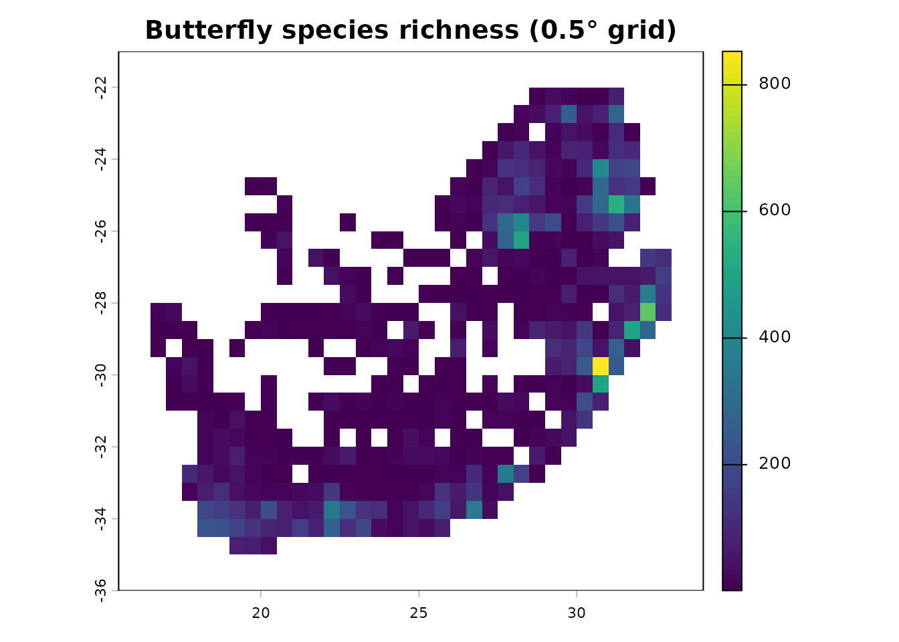

dissmapr provides a reproducible, end-to-end workflow
for computing and mapping compositional dissimilarity and biodiversity
turnover across large spatial scales. This short guide runs a complete,
self-contained workflow on the example GBIF butterfly
dataset for South Africa that ships with the package, taking you from
raw occurrence records to a gridded
species-richness map.
For the full, step-by-step tutorials (environmental linking, zeta diversity, MS-GDM, bioregional mapping and change detection), see the Articles on the package website.
Installation
# install.packages("remotes")
remotes::install_github("b-cubed-eu/dissmapr")A minimal, reproducible workflow
library(dissmapr)
# 1. Load the example occurrence dataset shipped with the package
load(system.file("extdata", "gbif_butterflies_csv.RData", package = "dissmapr"))
# 2. Import and harmonise the occurrence records
occ <- get_occurrence_data(
data = gbif_butterflies_csv,
source_type = "data_frame"
)
# 3. Reshape into long (site_obs) and wide (site_spp) tables
fmt <- format_df(
data = occ,
species_col = "verbatimScientificName",
value_col = "pa",
format = "long"
)
site_spp <- fmt$site_spp
# 4. Summarise records onto a 0.5-degree grid
grid <- generate_grid(
data = site_spp,
x_col = "x",
y_col = "y",
grid_size = 0.5,
sum_cols = 4:ncol(site_spp),
crs_epsg = 4326
)
# 5. Map gridded species richness
terra::plot(grid$grid_r[["spp_rich"]],
main = "Butterfly species richness (0.5° grid)")
Each function can be used on its own or chained into an end-to-end pipeline. From here, the Articles walk through the rest of the workflow in detail.